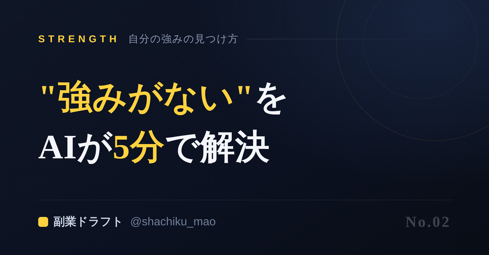
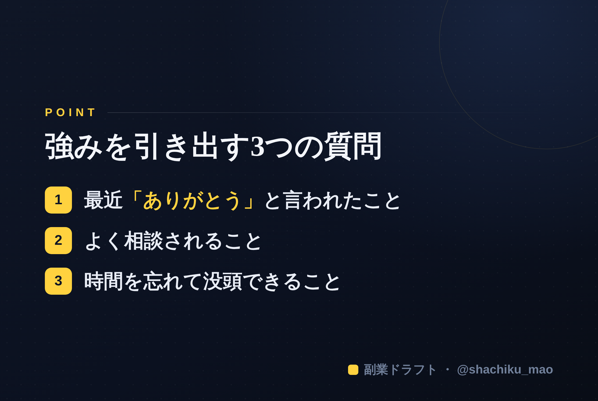

1. 「タイトルをコピー」→ note のタイトル欄に貼る
2. オレンジのラベルの画像（見出し画像）を note の見出し画像に設定
3. 「本文1をコピー」→ note本文に貼る
4. 青いラベルの位置（本文の途中）に、同じ名前の画像をアップして挿入
5. 「本文2をコピー」→ 続きを貼る
※ 見出しが普通の文字になったら、その行を選んで「大見出し」に設定してください

検索キーワード狙い：「自分の強み わからない」「強み 見つけ方」「自己分析 AI」
目的：検索流入 → LINE登録（無料プレゼント）→ 本命。
「発信や副業を始めたいけど、自分に強みなんて無い」 ——そう思っている人ほど、実は"強みを言葉にしていないだけ"です。この記事では、AIを使って自分の強みを5分で見つける方法を紹介します。
なぜ自分の強みは自分で分からないのか
理由はシンプルで、強みは自分の中で"当たり前"になっているからです。自分にとって簡単すぎて、価値だと気づけない。だから「探す」のではなく、他人（＝AI）に"引き出してもらう"のが正解です。
AIで強みを引き出す3つの質問
まずは自分に、次の3つを問いかけてみてください。答えをメモするだけでOKです。
1. 最近、人に「ありがとう」と言われたことは？ 2. よく相談されることは？ 3. 時間を忘れて没頭できることは？
この3つに答えられた時点で、「何もない」は「意外とある」に変わります。
そのままAIに貼るプロンプト
上の答えを踏まえ、AI（ChatGPTやClaude）に次を貼ってください。
私に1問ずつ7つ質問して。回答から「私の強み3つ・発信テーマ3つ・最初の投稿ネタ5つ」を提案して。まず1問目からお願いします。
自分で分析するより、AIに"取材"させる方が、圧倒的に速く・深く強みが出てきます。
「元○○」は最強の強みになる
見落としがちですが、前職の経験は宝の山です。
- 元経理 → 「お金の管理・節約」の発信
- 元販売 → 「売れる言葉・接客」の発信
- 元事務 → 「効率化・段取り」の発信
あなたの業界では"当たり前"のことが、外の人には"知りたかった専門知識"です。AIに「私の前職の当たり前を、業界外向けに価値ある知識に翻訳して」と頼めば、すぐネタになります。
見つけた強みを、どう活かすか
強みが言葉になったら、次は発信です。順番は「言語化 → 発信 → 収益化」。まずは1つ、強みを軸に発信してみましょう。完璧を目指さず、60点で出すのがコツです。

まとめ
- 強みは「探す」のではなく「引き出す」もの
- 3つの質問＋AIで5分で言語化できる
- 前職の"当たり前"は最強の強みになる
「何もない」は思い込み。あなたの強みは、まだ言葉になっていないだけです。
🎁 無料プレゼント
強みを引き出すプロンプトや投稿の型をまとめたAI発信スターターキットを無料配布中。受け取りは公式LINEから→https://lin.ee/RzyA13P
※ ここからは宣伝です。強みの言語化から発信の下書きまでをAIが手伝う自作ツール副業ドラフトも用意しています。ヒヤリング・強み棚卸し・Threads3本まで無料で試せます→https://note-threadssf.onrender.com